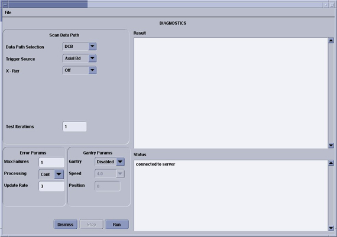
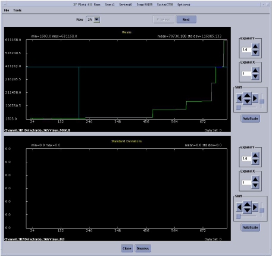
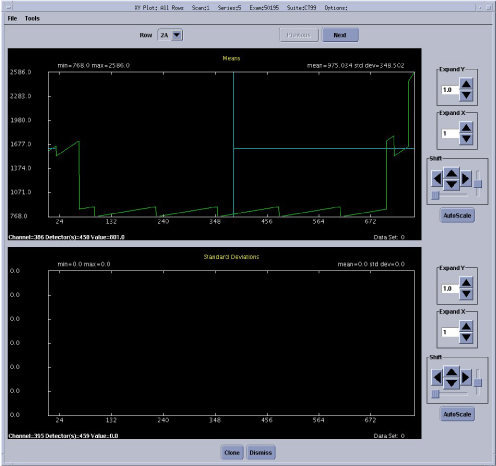
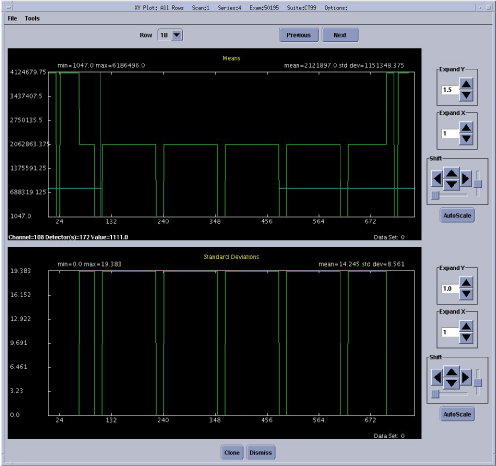

Operating Documentation
Direction 5181178-800, Rev# 16
BrightSpeed Select Service Methods Gen
Module Version 3.0, Version Date 7/23/12
Operating Documentation |
| Last Revised: | July 23, 2012 |
The Scan data path diagnostic is intended to aid in troubleshooting intermittent failures along the scan data path from the ADB boards and DIP board in Console.
There are two main tabs on the top left for Automated and Manual test selections. The automated test selections run without any user intervention. The manual tests require manual intervention such as loopback testing that requires manual cable connection changes.
Illustration 1: Scan Data Path Screen

Test 1 runs a known data pattern from the ADB board back to the console. The Host then compares the data pattern to the known pattern and indicates any difference as an error. Test 2 and 3 work the same way from the DIFB and DCB.
There are several test options available in the bottom left of the GUI to aid in troubleshooting problems that may be caused by interactions with other gantry functions. These test options are grouped into Gantry options and Other Options and are further defined below:
Test Iterations - allows the user to run multiple tests back to back to test for intermittant issues.
Processing - Continuous mode that run the tests until completion or Stop mode that will stop on the first error.
Trigger Source - trigger data collection using the normal TGP source or the DCB internally generated triggers.
Gantry - Disabled is the default, Enabled opens the Speed field for the user to select a rotation speed, Position opens the position field to allow the user to select a specific tube position (typical for slipring antenna troubleshooting). Gantry rotation enabled or position selected requires a Scan button press to initiate the test.
Speed - Selectable gantry speed once Gantry rotation is enabled.
Position - Allows an entry from 0-359. Value represents the tube location with zero at the top of the gantry and moving clockwise around the gantry.
Xray - Turns xray on or off for the test scan. A low technique scan is used with the filter closed and collimator at its smallest opening. Xray enabled requires a Scan button press to initiate the test.
Data pattern test results for the ADB, DIFB, and DCB boards can be viewed using Scan Analysis. Note the Exam and series for the desired test to view in the result screen of the Scan Data Path GUI. The following example screens show the data patterns to be expected from each test. The data patterns shown are the View Vs Channels (VVC) plot of one channel using all default settings within Scan Analysis. All Channels will look the same.
Illustration 2: PDAS DCB Data Pattern

Illustration 3: PDAS DIFB Data Pattern

Illustration 4: PDAS ADB Data Pattern
